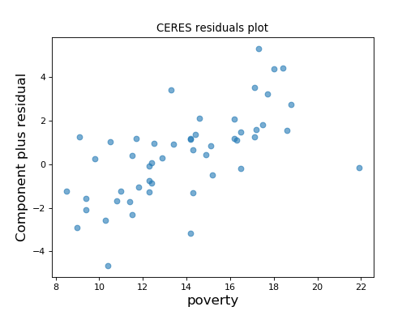

statsmodels.genmod.generalized_linear_model.GLMResults.plot_ceres_residuals¶
method
-
GLMResults.plot_ceres_residuals(focus_exog, frac=0.66, cond_means=None, ax=None)[source]¶ Produces a CERES (Conditional Expectation Partial Residuals) plot for a fitted regression model.
- Parameters
- focus_exoginteger or string
The column index of results.model.exog, or the variable name, indicating the variable whose role in the regression is to be assessed.
- fracfloat
Lowess tuning parameter for the adjusted model used in the CERES analysis. Not used if cond_means is provided.
- cond_meansarray-like, optional
If provided, the columns of this array span the space of the conditional means E[exog | focus exog], where exog ranges over some or all of the columns of exog (other than the focus exog).
- axmatplotlib.Axes instance, optional
The axes on which to draw the plot. If not provided, a new axes instance is created.
- Returns
- figmatplotlib.Figure instance
The figure on which the partial residual plot is drawn.
Notes
cond_means is intended to capture the behavior of E[x1 | x2], where x2 is the focus exog and x1 are all the other exog variables. If all the conditional mean relationships are linear, it is sufficient to set cond_means equal to the focus exog. Alternatively, cond_means may consist of one or more columns containing functional transformations of the focus exog (e.g. x2^2) that are thought to capture E[x1 | x2].
If nothing is known or suspected about the form of E[x1 | x2], set cond_means to None, and it will be estimated by smoothing each non-focus exog against the focus exog. The values of frac control these lowess smooths.
If cond_means contains only the focus exog, the results are equivalent to a partial residual plot.
If the focus variable is believed to be independent of the other exog variables, cond_means can be set to an (empty) nx0 array.
References
RD Cook and R Croos-Dabrera (1998). Partial residual plots in generalized linear models. Journal of the American Statistical Association, 93:442.
RD Cook (1993). Partial residual plots. Technometrics 35:4.
Examples
Using a model built from the the state crime dataset, make a CERES plot with the rate of Poverty as the focus variable.
>>> import statsmodels.api as sm >>> import matplotlib.pyplot as plt >>> import statsmodels.formula.api as smf >>> from statsmodels.graphics.regressionplots import plot_ceres_residuals
>>> crime_data = sm.datasets.statecrime.load_pandas() >>> results = smf.ols('murder ~ hs_grad + urban + poverty + single', ... data=crime_data.data).fit() >>> plot_ceres_residuals(results, 'poverty') >>> plt.show()
(Source code, png, hires.png, pdf)

{kind=link}
{kind=link}